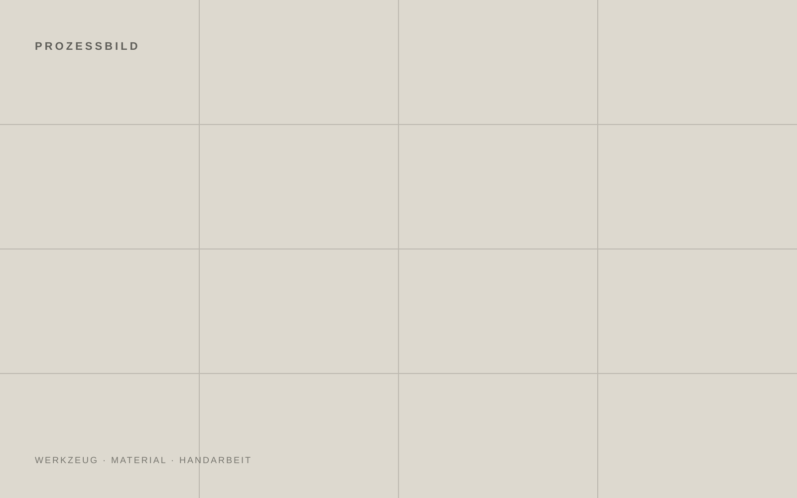

01
Material
Ausgangspunkt ist das rohe Material. Noch neutral, noch ohne Richtung.

02 — Prozess
Nicht jeder Schritt sieht bei jedem Stück gleich aus. Genau deshalb ist der Prozess hier als offene Folge angelegt: Material, Form, Oberfläche, Finish.
Ausgangspunkt ist das rohe Material. Noch neutral, noch ohne Richtung.

Schneiden, biegen, treiben, anpassen. Die Geometrie entsteht direkt am Werkstück.
Schläge, Linien, Brüche und Abrieb werden nicht aufgedruckt. Sie werden ins Material gearbeitet.
Matt, gebürstet oder poliert. Das Finish entscheidet, wie Licht und Struktur miteinander arbeiten.
Am Ende bleibt kein perfektes Duplikat, sondern ein einzelnes Werkstück mit eigener Oberfläche.